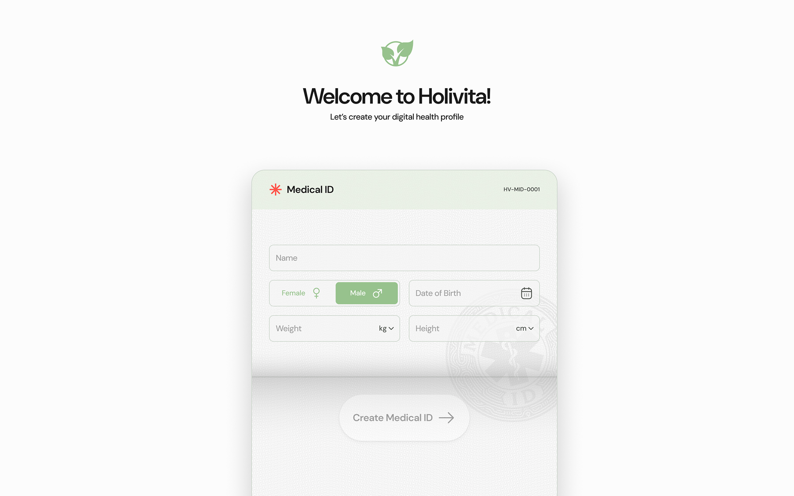

Кейс
В этом проекте я сфокусировался на ясности и доверии: объяснил «зачем» и «что будет дальше», снизил тревожность и убрал лишние шаги — без тёмных паттернов.
Короткая, но интересная история о том, как я усилил команду удобным инструментом и сделал один из этапов регистрации понятнее и человечнее.

В этом проекте я сфокусировался на ясности и доверии: объяснил «зачем» и «что будет дальше», снизил тревожность и убрал лишние шаги — без тёмных паттернов.